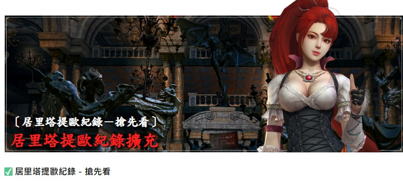
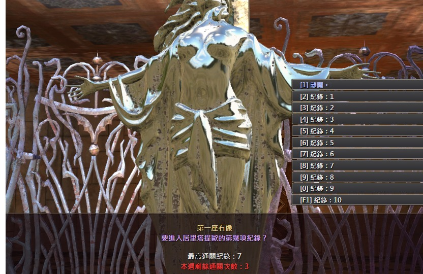
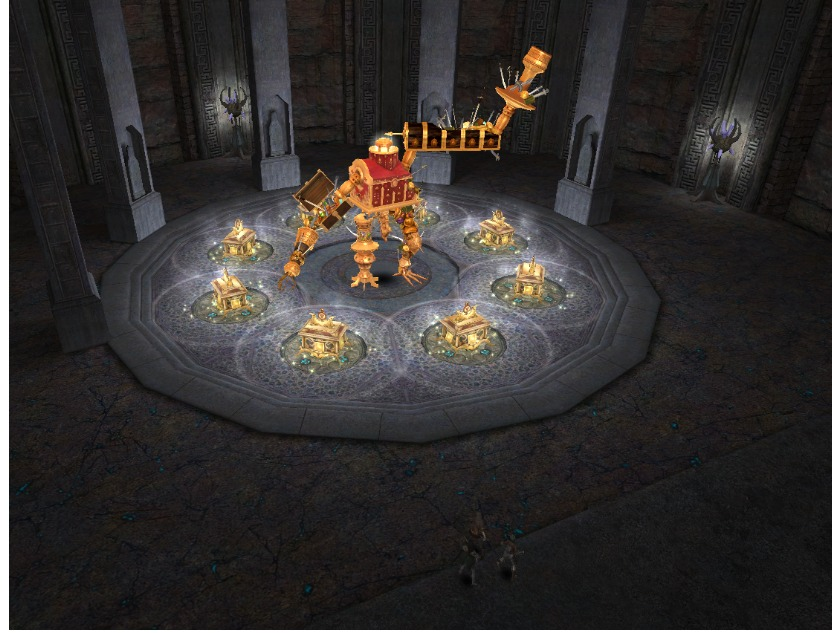
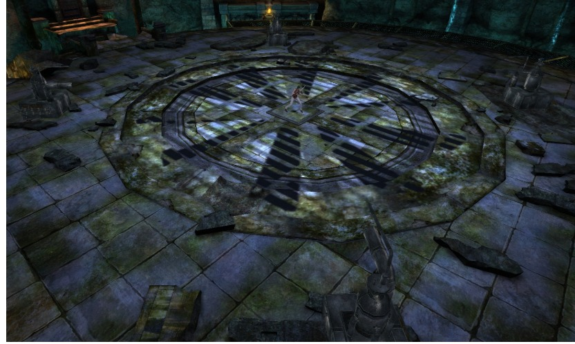
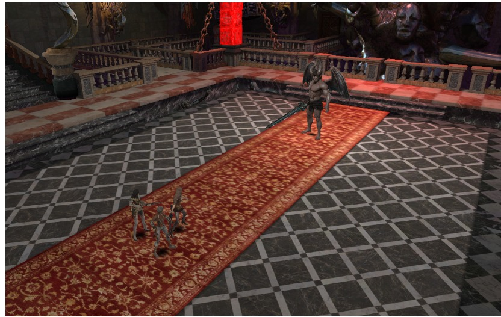
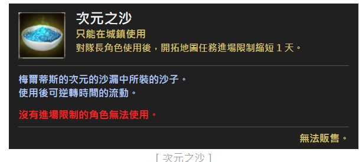
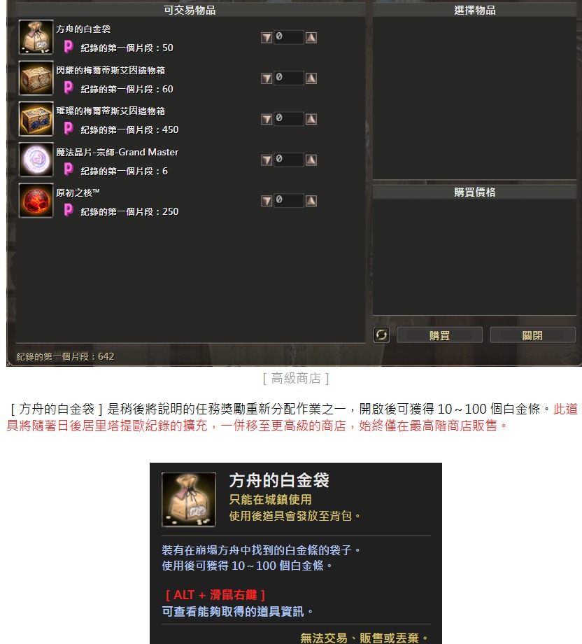
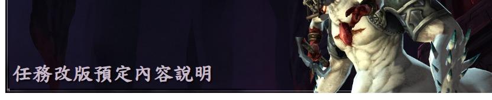

DEVELOPER'S NOTE · OCTOBER UPDATE
十月任務更新搶先看
居里塔提歐紀錄擴充、獎勵調整與每日任務改版。
大家好，我是開發者 Silo。
這次開發者筆記，要向各位介紹預計於 10 月進行的任務更新內容。
首先，「居里塔提歐紀錄：混沌方舟」將開放第六至第十項，共 5 項新紀錄。如先前「開拓地圖擴充與任務改版計畫說明」開發者筆記中所承諾的，我們也調整了居里塔提歐紀錄的獎勵，讓各位能取得符合任務難度的報酬。
此外，也將說明作為任務改版基礎的「每日任務獎勵重新分配」之詳細變更內容。現在就一起來看看吧！

UPDATE 01
居里塔提歐紀錄擴充
居里塔提歐紀錄即將擴充！
新加入的紀錄任務也和先前相同，可在「空虛的舞會」的第一座石像，選擇【紀錄 6】至【紀錄 10】之一進入。

| 紀錄 | 種族類型 | 限制時間 | 侵蝕數值 |
|---|---|---|---|
| 第六項 | 無生物型 | 15 分鐘 | 13 |
| 第七項 | 不死型 | 16 | |
| 第八項 | 人型 | 19 | |
| 第九項 | 生物型 | 22 | |
| 第十項 | 惡魔型 | 20 分鐘 | 24 |
【紀錄 6】至【紀錄 10】的任務並未另設小隊任務，全部都能以【個人】方式遊玩。此外，和先前【紀錄 5】相同，首次通關【紀錄 10】的家族，可額外獲得「紀錄的第一個片段」500 點。



UPDATE 02
「紀錄的第一個片段」獎勵調整與高級商店
隨著新紀錄開放，既有【紀錄 1】至【紀錄 5】的通關獎勵也會一併提升。
| 紀錄 | 變更前 | 變更後 |
|---|---|---|
| 第 1 項 | 2 | 5 |
| 第 2 項 | 5 | 7 |
| 第 3 項 | 7 | 10 |
| 第 4 項 | 10 | 15 |
| 第 5 項 | 15 | 20 |
| 第 6 項 | 新增 | 25 |
| 第 7 項 | 30 | |
| 第 8 項 | 35 | |
| 第 9 項 | 40 | |
| 第 10 項 | 50 |
NEW ITEM
次元之沙
中級商店將新增道具【次元之沙】。這是縮短開拓地圖任務再次進場等待時間的道具；隊長角色使用後，可使進場限制時間減少 1 天。
沒有進場限制的角色無法使用。

ADVANCED SHOP
高級商店
通關【紀錄 10】後即可使用。店內可購買遺物相關道具、魔法晶片－宗師－Grand Master，以及新道具【方舟的白金袋】。
【方舟的白金袋】開啟後可獲得 10～100 個白金條。此道具日後將隨居里塔提歐紀錄的擴充一併移至更高級商店，始終僅在最高階商店販售。


UPDATE 03
任務改版預定內容
既有貨幣任務改版
- 每日任務貨幣移轉：將分散於各任務的貨幣集中至「賞金獵人公會」任務。
- 擴充難度：新增困難模式與全新難度，提供符合難度的獎勵。
- 強化保底獎勵：減少輪盤發放，改為保底掉落，提高家族可獲得的貨幣上限。
- 轉為個人任務：將既有小隊進場任務改為個人專用任務。
過去，貨幣獎勵分散在眾多每日任務中，每次只能取得少量。因此即使挑戰高難度任務，獎勵與低難度的差距也不大。這次改版將整併分散的貨幣任務，調整獎勵結構，讓各位挑戰越高的難度，就能獲得與之相符、確實有感的報酬。
貨幣獎勵重新分配
36 種任務的既有裝備、材料等獎勵維持不變，貨幣獎勵改為「經驗值卡片」，並整併移轉至更高階任務。
賞金獵人公會－魔性
由「達人」至「宗師」細分為 5 階難度，調高高階獎勵；改為個人任務，失敗後可用較低難度重新挑戰。
賞金獵人公會－地區任務
整併卡斯提亞、阿爾莫尼亞及波爾圖斯的魔性任務，新增困難模式並調整獎勵結構。
其他改版內容
調整扭曲的阿爾莫尼亞／普魯里奧、塔洛斯與天上任務獎勵，並將部分小隊進場任務改為個人專用任務。
DETAILED TABLES · WEB VERSION
任務、難度與獎勵明細
以下內容已轉為可選取、可搜尋並適合手機閱讀的網頁文字與表格。
貨幣獎勵改為經驗值卡片的任務－36 種
以下任務的既有裝備、材料等獎勵維持不變；貨幣獎勵改為「經驗值卡片」，並整併移轉至更高階任務的獎勵中。
| 任務類別 | 包含任務 |
|---|---|
| 路西弗羅城任務 | 地下實驗室、地下倉庫、祕密之庭園、月光庭園、寧靜的宴會廳、吶喊之迴廊、被遺忘的接見廳、熄燈／不速之客 |
| 卡斯提亞任務 | 礦山、遺跡、混沌之塔；礦山－首領突襲、遺跡－首領突襲、混沌之塔－首領突襲；礦山：困難、遺跡：困難、混沌之塔：困難 |
| 阿爾莫尼亞任務 | 憤怒的統治者、狂傲的魔法師、渾沌的騎士、憎恨的執行者、恐怖的祭司 |
| 時間的片段任務 | 勒德斯、魔獸尤勒肯、蘿茲、阿佛雷蒙、索德雷拉、奈芙蒂斯、德斯列斯 |
| 歪曲的時間的片段任務 | 勒德斯、魔獸尤勒肯、蘿茲、阿佛雷蒙、索德雷拉、奈芙蒂斯、德斯列斯 |
貨幣獎勵變更比例
| 貨幣 | 變更比例 |
|---|---|
| 純金條 | 每 3 個 → 71 級經驗值卡片 1 張 |
| 白金條 | 每 1 個 → 達人 B 經驗值卡片 1 張 |
| 元素寶石 | 每 1 個 → 達人 G 經驗值卡片 1 張 |
| 魔法晶片－達人－Veteran | 每 9 個 → 71 級經驗值卡片 1 張 |
| 魔法晶片－大師－Expert | 每 3 個 → 71 級經驗值卡片 1 張 |
| 魔法晶片－名人－Master | 每 9 個 → 71 級經驗值卡片 5 張 |
| 貓眼石、月長石、成長石 | 移除後，移轉至更高階任務的獎勵中 |
移除貨幣獎勵的任務－23 種
既有魔法晶片、裝備、材料等獎勵維持不變，僅移除可兌換 Vis 的貨幣類道具。
| 任務類別 | 包含任務 |
|---|---|
| 拜倫鐘塔地下任務 | 地下 1 層、地下 2 層、地下 3 層、地下 4 層、地下 5 層、地下 6 層、地下 7 層、地下 8 層、地下 9 層、地下 10 層 |
| 皇家路口訓練控制器任務 | 皇家路口攻防戰（進階名人）、奪回軍事區（進階名人）、執政區（進階名人） |
| 塔洛斯任務 | 塔洛斯（大師）、塔洛斯（名人） |
| 血腥海軍任務 | 血腥海軍 |
| 個人副本：時間的片段任務 | 勒德斯、魔獸尤勒肯、蘿茲、阿佛雷蒙、索德雷拉、奈芙蒂斯、德斯列斯 |
貨幣獲得量減少的任務－3 種
【卡斯提亞任務：困難－首領突襲】除了貨幣獲得量稍微減少以外，其餘維持不變；另預計新增專用傳送門，讓各位能迅速移動至任務進場地點。
- 礦山：困難－首領突襲
- 遺跡：困難－首領突襲
- 混沌之塔：困難－首領突襲
賞金獵人公會任務改版－魔性
- 細分為 5 階難度：由「達人」至「宗師」，全面調整為 5 個階段。
- 大幅提升獎勵：「宗師」難度通關獎勵約為既有「挑戰」模式的 3 倍。
- 變更獎勵取得方式：移除「寬大之房」，改為通關時依機率掉落獎勵。
- 個人任務及重新挑戰：改為個人任務，失敗後可用較低難度重新挑戰。
任務變更內容
| 變更前 | 變更後 |
|---|---|
| 魔性／魔性：挑戰（2 階） | 魔性：達人／大師／名人／進階名人／宗師（5 階） |
| 小隊任務 | 個人任務 |
| 失敗後當日無法再次進場 | 失敗後可用較低難度重新挑戰 |
| 清除怪物波次後擊敗首領 | 完成由 7 回合組成的任務目標 |
回合構成
| 回合 | 內容 | 通關條件 |
|---|---|---|
| 1 | 首領 | 擊敗首領 |
| 2 | 怪物波次 | 清除怪物波次 |
| 3 | 菁英怪物 | 擊敗 3 隻菁英怪物 |
| 4 | 生存 | 存活至限制時間結束 |
| 5 | 怪物波次 | 清除怪物波次 |
| 6 | 菁英怪物 | 擊敗 3 隻菁英怪物 |
| 7 | 首領 | 擊敗首領 |
各難度保底獎勵
| 難度 | 保底貨幣獎勵 | 保底魔法晶片獎勵 |
|---|---|---|
| 達人 | 白金條 3 個、純銀條 10 個 | 100 級魔法晶片 20 個；魔法晶片－達人－Veteran 20 個 |
| 大師 | 白金條 7 個 | 魔法晶片－達人－Veteran 20 個；魔法晶片－大師－Expert 10 個 |
| 名人 | 白金條 14 個 | 魔法晶片－達人－Veteran 30 個；魔法晶片－大師－Expert 15 個；魔法晶片－名人－Master 5 個 |
| 進階名人 | 白金條 24 個、純銀條 10 個 | 魔法晶片－達人－Veteran 30 個；魔法晶片－大師－Expert 20 個；魔法晶片－名人－Master 10 個 |
| 宗師 | 白金條 45 個、純銀條 10 個 | 魔法晶片－達人－Veteran 30 個；魔法晶片－大師－Expert 25 個；魔法晶片－名人－Master 15 個；魔法晶片－宗師－Grand Master 5 個 |
各難度主要機率獎勵
| 難度 | 主要獎勵 |
|---|---|
| 達人／大師 | 阿爾莫尼亞裝備製作書、阿爾莫尼亞裝備、貓眼石 |
| 名人 | 法蘭諾裝備製作書、阿爾莫尼亞裝備、月長石 |
| 進階名人 | 法蘭諾裝備、5 大元素／阿彼思武裝／黛烏斯機神武器製作書、月長石 |
| 宗師 | 5 大元素／阿彼思武裝／黛烏斯機神武器製作書；5 大元素／阿彼思武裝／黛烏斯機神武器；阿彼思武裝／黛烏斯機神飾品製作書；月長石 |
賞金獵人公會任務改版－地區任務
- 整併地區任務：卡斯提亞、阿爾莫尼亞、波爾圖斯的魔性各整併為 1 種任務。
- 新增困難模式：各地區整合任務新增更高難度的「困難模式」。
- 調整獎勵結構：移除既有覺醒首領，相關獎勵整併移轉至困難模式。
- 轉為個人任務：將既有小隊進場任務改為個人專用任務。
以往地區魔性任務依首領分開，要完成一個地區便得進場三次。改版後每個地區只要進場一次，就能遇到該地區的 3 種首領。
整合任務列表
| 變更前 | 變更後 |
|---|---|
| 魔性的人面獅身、魔性的人身牛頭怪、魔性的梅杜莎 | 魔性的卡斯提亞、魔性的卡斯提亞：困難 |
| 魔性的阿彼思的哀傷、魔性的阿彼思的憂鬱、魔性的阿彼思爪牙黛斯克羅塞 | 魔性的阿爾莫尼亞、魔性的阿爾莫尼亞：困難 |
| 魔性的亡魂、魔性的火星、魔性的奎尼圖拉 | 魔性的波爾圖斯、魔性的波爾圖斯：困難 |
其他改版內容
- 扭曲的阿爾莫尼亞／普魯里奧：調整獎勵，新增更高難度的「困難模式」。
- 塔洛斯任務：調整「進階名人」獎勵，新增「宗師」難度。
- 天上任務：新增符合難度水準的天上專屬獎勵。
- 轉為個人任務：將部分小隊進場任務改為個人專用任務。
開發團隊認為，這次任務改版最優先要解決的是高階內容不足，以及任務之間的獎勵落差。因此除了貨幣任務改版，也預計大幅增加過去報酬不符難度的高階任務獎勵。
團隊正持續調整細部數值，讓獎勵能合理反映遊玩難度與投入時間。各任務的詳細獎勵，將在相關作業完成後，透過測試伺服器公開。
開發團隊正在逐步完善將於 10 月推出的各項新內容。詳細內容確定後，會盡快透過新的開發者筆記與各位見面。
謝謝大家。